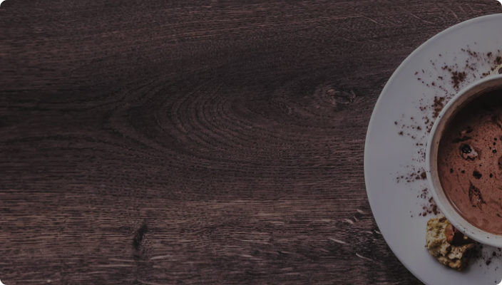
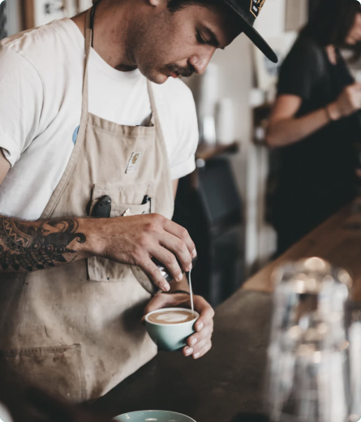
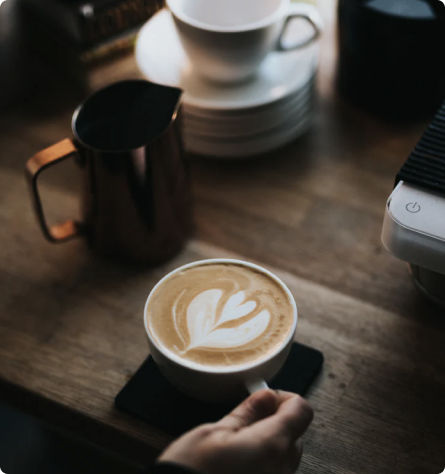
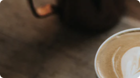

.png)
Coffeeroasters began its journey of exotic discovery in 1999
, highlighting stories of coffee from around the world. We have
since been dedicated to bring the perfect cup - from bean to
brew - in every shipment.
Coffeeroasters began its journey of exotic
discovery in 1999, highlighting stories of
coffee from around the world. We have
since been dedicated to bring the perfect
cup - from bean to brew - in every
shipment.



We’re built on a simple mission and a commitment to doing good along the
way. We want to make it easy for you to discover and brew the world’s best
coffee at home. It all starts at the source. To locate the specific lots we want
to purchase, we travel nearly 60 days a year trying to understand the
challenges and opportunities in each of these places. We collaborate with
exceptional coffee growers and empower a global community of farmers
through with well above fair-trade benchmarks. We also offer training, support
farm community initiatives, and invest in coffee plant science. Curating only
the finest blends, we roast each lot to highlight tasting profiles distinctive to
their native growing region.
We’re built on a simple mission and a commitment to
doing good along the way. We want to make it easy for
you to discover and brew the world’s best coffee at
home. It all starts at the source. To locate the specific
lots we want to purchase, we travel nearly 60 days a
year trying to understand the challenges
and opportunities in each of these places. We collabo
with exceptional coffee growers and empower a global
community of farmers through with well above fair-
trade benchmarks. We also offer training, support
farm community initiatives, and invest in coffee plant
science. Curating only the finest blends, we roast each
lot to highlight tasting profiles distinctive to their
native growing region.
We’re built on a simple mission and a
commitment to doing good along the way. We
want to make it easy for you to discover and brew
the world’s best coffee at home. It all starts at the
source. To locate the specific lots we want to
purchase, we travel nearly 60 days a year trying to
understand the challenges and opportunities in
each of these places. We collaborate with
exceptional coffee growers and empower a global
community of farmers through with well above
fair-trade benchmarks. We also offer training,
support farm community initiatives, and invest in
coffee plant science. Curating only the finest
blends, we roast each lot to highlight tasting
profiles distinctive to their native growing region.
Although we work with growers who pay close attention to all stages of
harvest and processing, we employ, on our end, a rigorous quality control
program to avoid over-roasting or baking the coffee dry. Every bag of coffee is
tagged with a roast date and batch number. Our goal is to roast consistent,
user-friendly coffee, so that brewing is easy and enjoyable.

.png)
